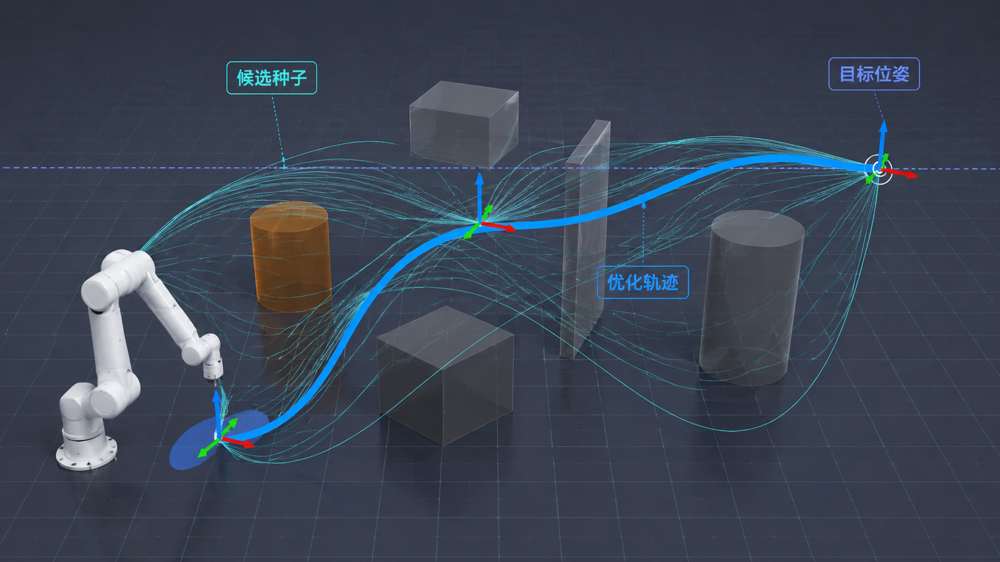
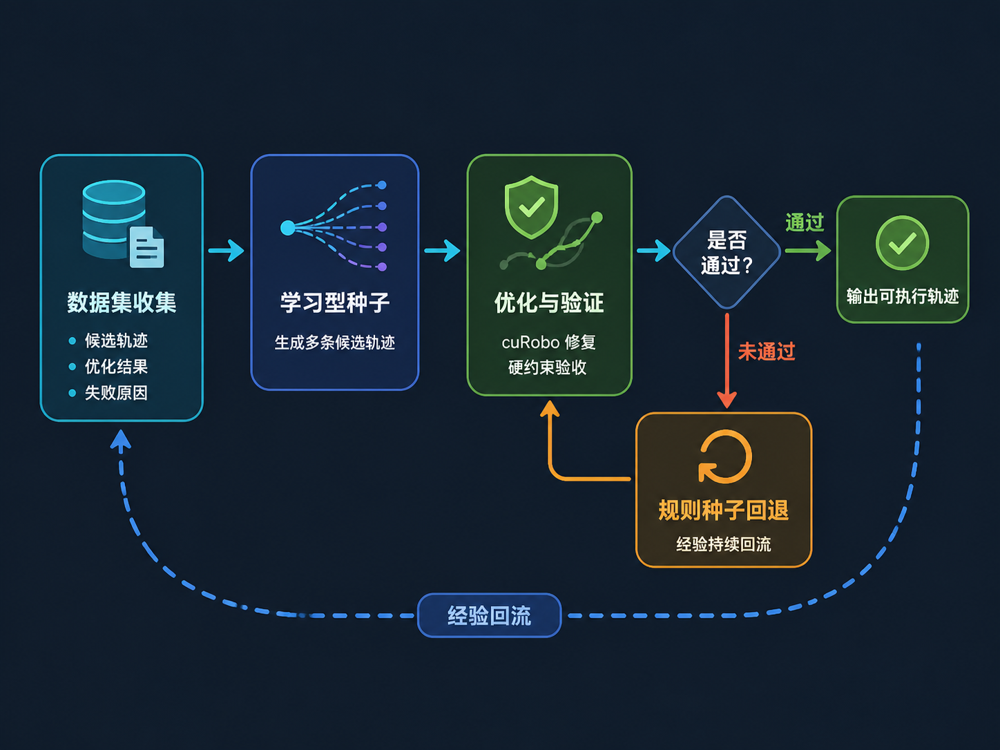

多样化种子生成
水平姿态插值、连续 IK 分支、目标构型变体、twist 调整与分段优化。
LEVEL-CONSTRAINED MOTION PLANNING
面向姿态敏感任务的机器人运动规划、优化与持续学习系统。
让机械臂在复杂环境中到达目标位姿，并在全程严格保持末端姿态约束。
核心问题
让机械臂“拿得住”并不难，
让它“拿得稳”才是真正的挑战。
我们关注的是，让机械臂在搬运过程中不仅能到达目标位置，还能始终保持末端姿态稳定，例如端着一杯水平稳移动、托盘始终保持水平。

02 / 系统方法

水平姿态插值、连续 IK 分支、目标构型变体、twist 调整与分段优化。
cuRobo 并行修复碰撞、关节限位、轨迹平滑性与目标误差。
统一检查水平误差、碰撞、限位、连续性与动力学可执行性。

记录候选种子、优化结果、约束误差与失败原因。
条件模型生成更接近可行区域的多样化轨迹候选。
候选经 cuRobo 修复，并由硬验证器进行安全验收。
失败回退至规则种子与原生规划；样本持续回流。
03 / 仿真实验
任务成功数
任务成功数
相同任务集与测试预算
末端姿态质量
04 / 实机实验
SR5 六自由度机械臂 · 随机 20 个可达目标点
SR5 六自由度机械臂 · 随机 20 个可达目标点
实机与规划演示